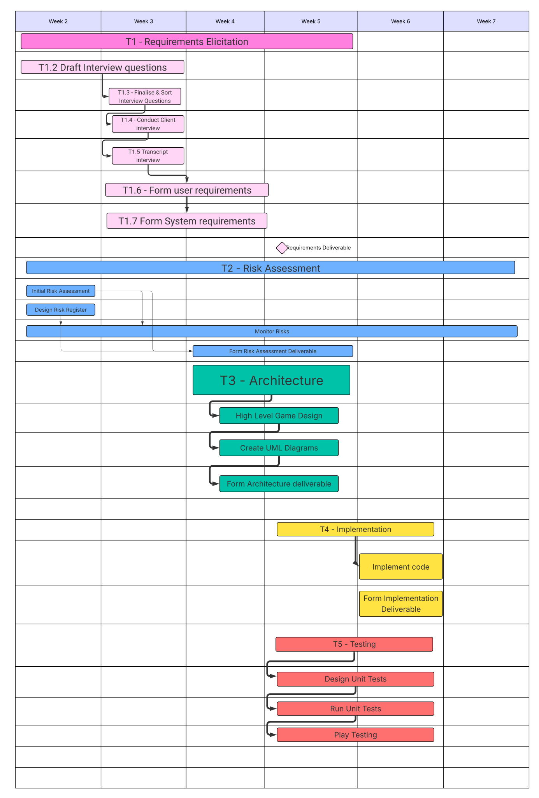
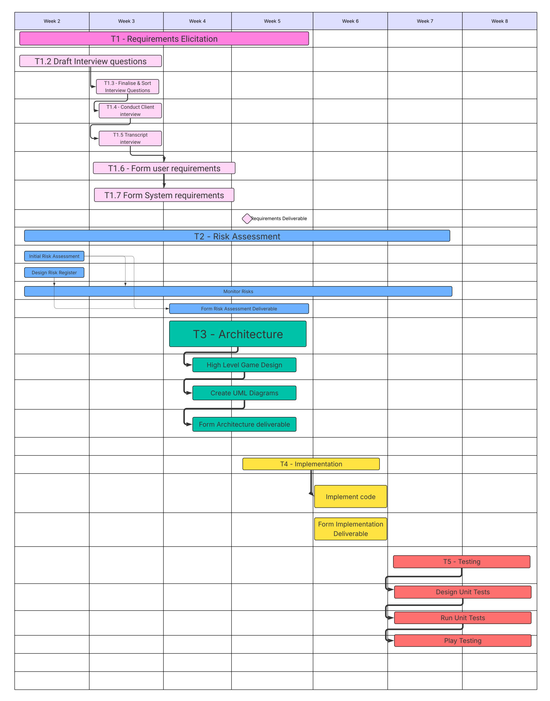
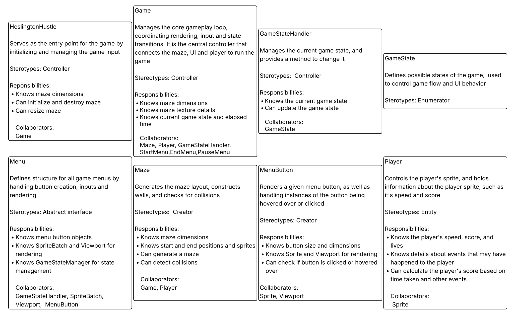

ENG1 Module - University of York
There's a bunch of stuff that can happen while you're running through the maze. Some of it helps, some of it makes your life harder.
Random invisible triggers scattered around the maze. Walk over them and something happens.
Step on the wrong tile and everything goes dark for 10 seconds. You can still see the maze but it's way harder to navigate. On the plus side, if you manage to finish while it's active you get 3x the score.
Spawns a second lecturer enemy when triggered. Now you've got two of them to avoid instead of one. Same deal as darkness though - complete the maze while this is active and you triple your final score.
Get too close to the center of the maze (within 5 units) and this guy shows up. Moves 2.5x faster than normal lecturers, which is pretty terrifying. Only spawns once per game though, and if you have a shield you can survive getting hit.
You need all three to unlock the exit. Can't finish without them.
Gives you a shield that blocks one hit from enemies or fire hazards. Gets used up after taking damage once.
Doubles your movement speed permanently. One-time pickup but the effect lasts the whole game.
Each one's worth 1500 points. If you collect all 10, your total score gets multiplied by 8x.
Touch one and you lose a heart (unless you've got a shield). They disappear after you trigger them.
Slows you down by 20%. Effect is permanent and stacks if you hit multiple spills.
Here are out meeting logs used to keep track of tasks and who is asigned to them.

Testing moved to later weeks.

